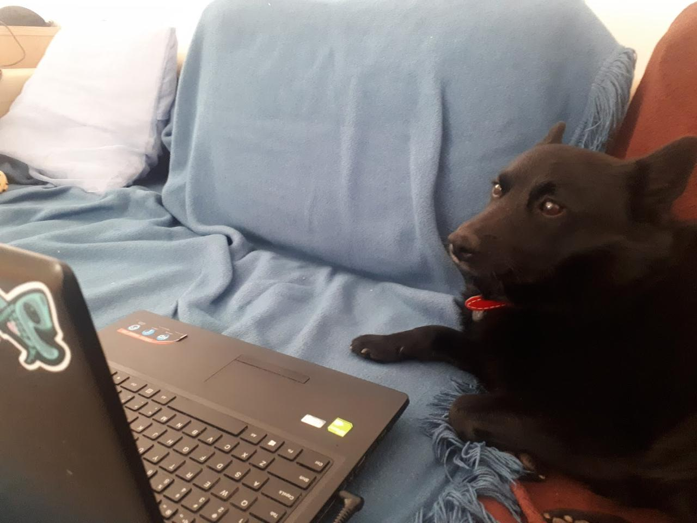
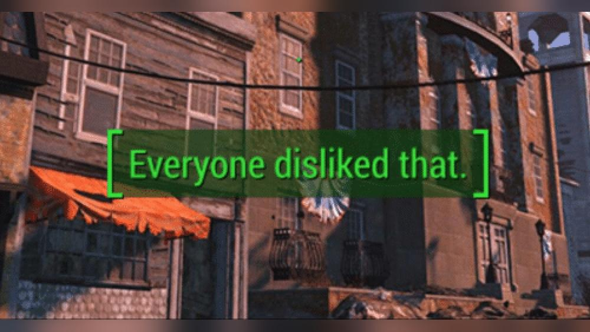

As promised, here’s a post on the story of my time at IPPLM - the Institute of Plasma Physics and Laser Microfusion, where I worked for the last almost-three-years. Past tense, because since September I’ve successfully found remote work as a Python software developer at a large pharmaceutical company. Speaking of… I don’t think I can say as much as I’d hoped about the projects we’re working on, but, suffice to say, I think they have some real potential for helping people with neurodegenerative diseases. So I’m still trying to tackle one of the Large Problems, just… another one, and more so from a backend/support angle.
While writing this, I realized that this story was also deeply intertwined with the story of the global COVID-19 pandemic, because that turned the whole situation on its head. I thought about separating the two, but decided instead to embrace it and tell it whole rather than in pieces. So, beware, this is going to get long. To alleviate that, I’ve broken it up more than usual and have placed the major takeaways in specifically formatted sections throughout.
With that disclaimer in place… onto the story!
How I got there
During my undergraduate studies, somewhere maybe during my second year, I realized that
- hey, nuclear fusion is this cool project, with lots of potential for humanity, that also fits most of my scientific interests (fluids, electrodynamics, computational physics), and none of my friends seem to be taking care of that. I want it to get done; I’ll go do it.
- Dominik, 2014 or so
So I went ahead and started doing it, using a three-pronged approach:
- Learn more about it.
- Find people I can help with it online.
- Find people I can help with it locally.
I started grabbing books and courses about plasma and fusion, so that was avenue #1 covered.
To deal with #2, since I was a budding dev at the time, with basically a single computational physics book of extra-curricular experience in my toolbelt (which also exposed me to the idea of open source) and a metric ton of optimism, I tried searching on GitHub for openly developed plasma physics projects. That’s how I found PlasmaPy, and I should really write a post on my history with that project sometime, as it’s been one of the most impactful decisions of my life.
I think there’s a lesson to be learned here:
Takeaway number one: the Internet really shortens the distance between cool projects and useful volunteers looking to make a difference while gaining experience. This is a resource you could be using today. Go ahead!
Still, at the time it was a small project, a suite of generic tools, and I felt the gaping hole of my plasma physics inexperience was a hindrance. I wanted to get some hands on experience with actual nuclear fusion.
The road to IPPLM
I still had #3, though - reaching out to people locally who were already involved with fusion - and that’s how I found IPPLM. I initially signed up there for an apprenticeship, which was spent mostly helping out a senior researcher with debugging and visualization for a simulation he was running for a plasma focus system. That was neat and I learned a lot during that (I also wrote some code that I still shudder to think about!), but I didn’t get as much hands on experience with actual nuclear fusion, the cool machines and experiments, the twisted geometries of tokamaks and stellarators.
During that time, I learned about the particle-in-cell method and figured I wanted to try doing something in that area. My supervisor put me in contact with professor Jabłoński, who’s absolutely one of the literal Best People on the planet and can also play a mean acoustic guitar. He guided me through the process of writing a particle in cell code in Python. I’ve told that story before. Still… it was a little… far from actual nuclear fusion, the cool machines and experiments, etc etc, you know the drill.
So in late 2019, having spent nine months with natural language translation at Samsung, having decided I’d go back to doing science because natural language translation seemed to be getting the help it needed and fusion less so, I went back to IPPLM and started working there, first part-time, then full time. For the first time I’d have hands on experience with nuclear fusion, etc etc!
I spent maybe four months there before COVID-19 exploded in Asia and then globally.
And then it got worse, but also better
It didn’t look like much initially, though I think I got initial glimpses faster than most - three of my friends at IPPLM went to Japan’s LHD at the time and went on medical leave straight after coming back. I still suspect I also caught a relatively mild form from them - which could be why I managed to go through the pandemic relatively unscathed. Of course, getting vaccinated ASAP later also helped!
Still, at the time, things were deteriorating pretty rapidly. Back then, nobody knew how this thing spread, how lethal it was and how you could tell you had it. There was a period where everyone was paranoid about disinfecting surfaces, such as door knobs, because we didn’t know it transmitted via the respiratory system. So we got sent to remote work basically overnight, and rumors of lockdowns kept popping out.
I was extremely lucky and already had an opportunity to move out with my then-fiancee-now-wife lined up, which we seized literally right before the lockdown hit. We thought, hey, whatever happens it’s going to be easier to handle it together. So we grabbed the dog and ran in early April.
 > My pair programming buddy. He sometimes barks at antipatterns. Well, he also sometimes barks at patterns, or maybe it’s all just the pigeons outside, but I believe he’s trying to help, all the same.
And the next few months, spent working remotely, I actually enjoyed quite a lot.
Working from home
Because it turns out that hey, as a massive introvert I actually do some of my best work on my own terms. Locked up tight in a tiny room with no interruptions but the work in front of me? Sign me up! Getting up before the sun and racing it to knock down one more bug before dawn? Hell yes! Writing code without trousers? Well let me tell you, I’ve written some of my worst code with trousers on and I do not think that a mere coincidence!1
Professionally, this was a weird time because I was assisting with one computational project and investigating my first master’s thesis attempt. I was lucky to be able to do the thesis as part of work, but it didn’t happen to pan out. The first attempt - because we basically had a massive miscommunication and didn’t reach out to the folks in Germany early enough. We vastly underestimated the difficulty of developing a Bayesian model for Thomson scattering and didn’t have enough experience with the subject to de-scope it into a “minimum thesis-able product”.
The latter was a re-implementation of an existing code and, well, let’s just say it was sufficiently unexciting and un-useful that I had trouble motivating myself to finish it. I had more important stuff to do! Through that time, I also worked on parsing LHD spectroscopic data and identifying spectral lines in it; backward inference of PHA data using IPPLM’s forward model for impurities; and essentially a ray-tracing parallelized algorithm for the CO-Monitor diagnostic, which I hear is coming online soon. I really enjoyed all of these.
All that taught me two things:
Takeaway number two: it’s awesome to get results, but the total impact of the results gotten by all the people you help - even by simply writing tools - can often be far greater.2
Of course, this may be a purely personal thing - some folks just prefer writing tools! In fact, while my official job title at IPPLM was “Pracownik badawczo-techniczny” (Technical/research worker/specialist, I guess?), there’s an increasingly popular term “Research Software Engineer”, or RSE, that describes the sort of job I did. In fact I’ll leave you with the RSE community’s website and jump straight to the next lesson learned:
Takeaway number three: Research Software Engineers, or people straddling the boundary of science and software development, are extremely important. Scientists alone, without practical experience in software dev, have an incredibly rough road to good results in this digital age. But you can’t just point software devs at a tokamak and expect to get working fusion out of it, either. If you are proficient in both areas, even enough to know who to ask in each, this may be a good path you can take.
Of course I’m not saying it’s impossible for “pure” scientists, physicists in my case, to get results - but the code they write is often obscure, inefficient and non-generalizable, so it takes a lot of time to rewrite it from one experiment to another. I’m not saying my code’s all that much better, far from it - I’m just pointing out a problem in the system.
All in all, though, the first two waves of the pandemic were actually a good period for me and my then-fiancee. Of course, we dodged a bunch of bullets - heavy infections, losses of people close to us…
And then it got better, but also worse
What got better was the pandemic. Well, relatively speaking - we had vaccines, but a lot of people were being unreasonable and refused to do their part for societal immunity. Still, by mid 2021 we “mostly” “had a handle on it”, or at least that’s what our government… I can’t tell if they honestly thought that. I personally smelled bullshit and was validated afterwards, because, basically…
 > We were here. “Coronavirus in retreat”, as per Polish PM Morawiecki, July 1st. Plot as per Worldometers.info.
> We were here. “Coronavirus in retreat”, as per Polish PM Morawiecki, July 1st. Plot as per Worldometers.info.
On, if I remember correctly, July 1st, 2021, a Thursday, we all got an email from the Director from the Institute, saying that we’d be returning to stationary work… on July 2nd, a Friday.
 > my section of the IPPLM, July 1st (colorized)
Now I’m not saying the Director was in a comfortable position here, IPPLM being a national institute at all and likely under pressure from the same dorks in government whose ineptitude got us waves #3, #4. Or maybe it’s that it’s hard to get remote work working for experimentalists, and while folks like me who mostly whack away at a keyboard and prep data analysis for the next W7X campaign were seeing crazy high efficiency, work on the experimental part stalled. I honestly don’t know.
Whatever the reason, in my little area, this has been widely seen as an utterly shit move. Due to decisions made above our heads and without giving us any say in, we were now forced to:
- risk catching COVID, which of course flared up again soon in full force after summer vacation ended for schoolchildren
- spend valuable time commuting, which in my case came to 2h30m a day, which is… draining, to say the least
- work less efficiently, because now you’re tired from the commute and you’re constantly paying
- work in constant distraction, because there’s only so much blasting Rammstein on headphones can help you block out, and I don’t think I was being any less helpful to everyone who needed it
- achieve less progress, so it becomes harder to motivate yourself when you’re not getting the results you’d like
- spend the 5.5 hours left in the day (assuming 8 hours work, 8 hours sleep, 2h30m commute) trying to fit meal prep, regenerating just enough to survive the next day
- write code while wearing trousers
And, as I heard, I don’t know if it was just middle management playing bad cop, but this would be a permanent arrangement.
And, well, I lasted roughly a year before slowly coming to the conclusion that the strain all this was putting on my personal life, on my mental health, on my other projects (remember PlasmaPy?)… wasn’t worth it. So, since my contract was running out at the end of summer 2022, I decided, welp, guess I’m not finishing this master’s thesis that’s not going to help anyone just so I can work in conditions I don’t enjoy, and didn’t seek an extension.
So here’s my last lesson learned at IPPLM!
Takeaway number four: work at home, for work that can be done remotely and for people who can successfully adapt to it is such a gamechanger that workplaces must adapt to it themselves. Workplaces that don’t miss out on a whole lot of potential.
I’m not saying it’s an easy transition. Organizing remote work is a whole ’nother game. Still, I’m pretty sure that, despite whatever you might hear from, for example, Bezos-owned media, it’s the way to go for people like me.
The end of this chapter, and how it’s getting better again
Here’s a disclaimer: I absolutely don’t want to dunk on IPPLM! I It’s a good place, with a lot of great people that I have a lot of respect and gratitude for, and some damn cool projects. Still, the pandemic made me realize that I personally am not a good fit for it. I wish I could have been, and with more flexibility from the management side I might have been. I would still recommend the workplace, but be realistic about how much you’d like to endure for work and try to find an environment that’s a good fit for you. Sample. Try things.
And that’s it for this story. COVID is now likely a permanent fixture in our lives, unfortunately. But even if it were extinguished, I don’t think I’m likely to come back to office work. I’m extremely happy with how things are going now, with my fully remote setup. I’m now:
- healthier, both mentally and physically
- happily doing stuff like spending more time with my wonderful wow-I-still-can’t-believe-she’s-my wife, writing, both code and blog posts, as you can see here!
- working efficiently, in conditions I find optimal (5 AM start? Sure!)
- learning a lot about how industry does Python
- actually managing to have a social life
- helping nuclear fusion the way I like, writing tools that actually help a lot of people, on my own terms
- actually moving my life along!
So… yeah! If you got here, thanks for sticking through it, I hope you found it interesting and/or helpful. I certainly found writing it helpful in processing the last two crazy years. If you didn’t, while I can’t exactly return you the time you’ve spent reading, I can get you a dog photo that might be more your thing. Get in touch if you’d like to take me up on that offer :)
Footnotes
I can neither confirm nor deny trousers were worn while writing this post. Honestly, it’s been in draft for a while so I can’t actually remember. I’d estimate like 40% trouserless, which may be why it’s gotten so lengthy.↩︎
Disclaimer: whether the scientific research system we have now is set up to promote and reward writing tools is arguable. In fact I’ll argue for an emphatic no and just point you towards the announcement of JOSS for more on that.↩︎